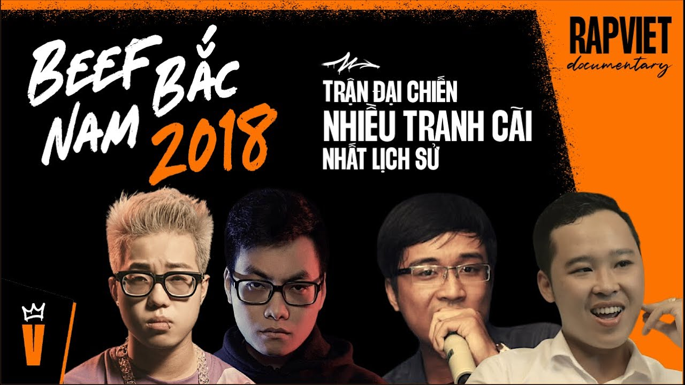
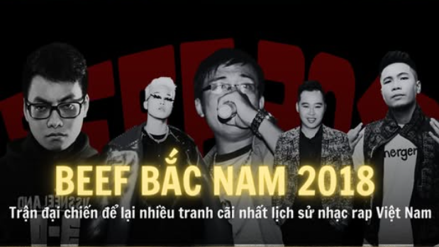

TRẬN ĐẠI CHIẾN NAM BẮC 2018
BEEF 2018
- Tổng quan.
Beef Bắc Nam 2018 là một trong những sự kiện gây chấn động nhất trong lịch sử rap Việt. Không giống như các trận beef trước đó vốn mang tính cá nhân hoặc tổ chức, cuộc chiến năm 2018 có sự tham gia của hàng chục rapper từ cả hai miền, bao gồm cả những tên tuổi kỳ cựu lẫn thế hệ trẻ mới nổi. Cuộc beef kéo dài hơn một tháng, với hơn 70 bài diss track được tung ra, tạo nên một làn sóng tranh luận, chia rẽ và cả kết nối trong cộng đồng hiphop Việt Nam.
- Nguyên nhân và bối cảnh hình thành
Mâu thuẫn vùng miền âm ỉ
Sau thành công của các tổ chức miền Nam như EvB, OTD, G5R, và các hoạt động như freestyle tour, battle rap, miền Nam trở nên sôi động và có phần lấn át miền Bắc.
Miền Bắc tuy có các tổ chức như RVP, 7LD, nhưng vẫn bị đánh giá là thiếu sự bùng nổ và tính kết nối.
Tư tưởng nghệ thuật và chính trị
Một số rapper bắt đầu đưa yếu tố chính trị – xã hội vào âm nhạc, như bài “DMCS” của Nah, gây tranh cãi về giới hạn của rap.
Bộ đôi EvB nổi bật với các bài rap châm biếm như “Lạy Chúa Ông Can”, “Bố Em Là Cán Bộ”, khiến họ trở thành tâm điểm của nhiều luồng ý kiến trái chiều.
Mâu thuẫn cá nhân và phát ngôn gây tranh cãi
Livestream của MCILL vào tháng 3/2018 với nhận định về kỹ thuật rap và cách dùng vần đã châm ngòi cho căng thẳng.
Bài “Cà Rá” của SeaChains với câu “Sài Gòn là thủ đô” bị xem là xúc phạm miền Bắc, dẫn đến phản ứng mạnh từ các rapper phía Bắc như Phúc Du, RichChoi, và MCILL.
- Diễn biến cuộc beef
Những phát súng đầu tiên
Pjpo tung bài “Bằng Track”, bất ngờ nhắm vào Rhymastic, LK, và cả SpaceSpeakers, dù họ không trực tiếp liên quan.
Phúc Du đáp trả bằng “Cần Cẩu”, một bài diss mạnh mẽ, mở đầu cho chuỗi phản công từ miền Bắc.
Bùng nổ diss track và chia phe cộng đồng
Các rapper như SolBass, Skyler, Blacka, Obito, Hades, Rick, Tony TK, ACY, ICD, … lần lượt tham chiến.
Fan chia thành hai phe rõ rệt, dẫn đến hiện tượng report bài nhạc, hack tài khoản, và photoshop nội dung giả mạo.
Cao trào và những cú twist bất ngờ
Skyler bị bắt vì liên quan đến chất kích thích, gây chấn động cộng đồng.
ACY tuyên bố đặt cọc 40.000 USD để tổ chức sàn đấu battle tại Đà Nẵng, nhưng không được phía Bắc hồi đáp.
Phúc Du tung bản trường ca “Tứ Mã” gồm 4 phần, phản pháo lại ACY và các luận điểm từ miền Nam.
Những gương mặt nổi trội trong trận beef
- Tác động đến cộng đồng rap Việt
Khẳng định thế hệ rapper mới
Cuộc beef giúp nhiều rapper trẻ như Phúc Du, RichChoy, Obito, Hades, Rick, Tony TK khẳng định tên tuổi.
Các tổ đội như VinGang, RVP, OTD, 7LD trở nên nổi bật hơn trong cộng đồng.
Thay đổi tư duy cộng đồng
Người nghe bắt đầu quan tâm hơn đến nội dung lời rap, thông điệp xã hội, và tư duy nghệ thuật.
Rap không còn chỉ là âm nhạc đường phố, mà trở thành công cụ phản biện xã hội và thể hiện bản sắc cá nhân.
Tạo tiền đề cho các cuộc beef sau
Beef 2018 mở đường cho các trận chiến sau như:
Các trận battle cá nhân như Magazine vs Gizmo, Norahc vs ACY, tiếp tục kéo dài dư âm của cuộc chiến.